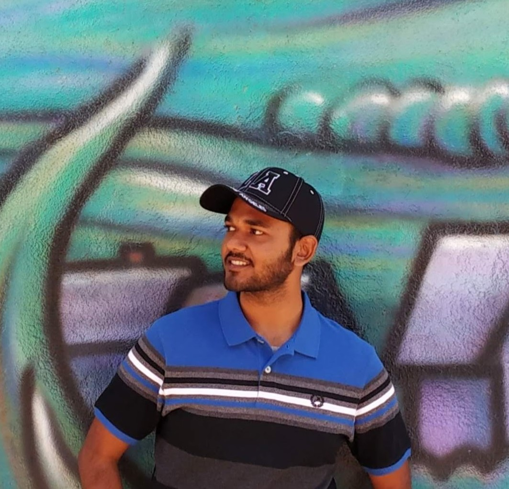

About
 Subham stumbled upon his
interest in ECE serendipitously while studying Aerospace Engineering,
realizing that the world of signals and communications held a greater
fascination for him. He earned his B.Tech in ECE from the Indian
Institute of Space Science and Technology. Currently, his research
interests include wireless communication and networking systems.
Subham’s extensive prior experience includes designing multiple access
schemes for massive MIMO communications applications and software
development for embedded systems. Beyond academia, he describes himself
as a fun-loving ambivert, occasionally indulging in playing the ukulele,
singing, and socializing. He also plays badminton and table tennis at a
level slightly beyond beginner. His love for the outdoors extends to
treks, hikes, and activities like running and swimming.
Education
- B.Tech, Electronics and Communication Engineering, Indian Institute
of Space Science and Technology, 2020.
Publication
Statistics: Google
Scholar
2022
- S. Saha, H. Singh Makkar, V. Bala Sukumaran and C. R.
Murthy, “On the Relationship Between Mean Absolute Error and Age of
Incorrect Information in the Estimation of a Piecewise Linear Signal
Over Noisy Channels,” in IEEE Communications Letters, vol. 26, no. 11,
pp. 2576-2580, Nov. 2022, doi: 10.1109/LCOMM.2022.3200306.
2021
- S. Saha, V. B. Sukumaran and C. R. Murthy, “On the Minimum
Average Age of Information in IRSA for Grant-Free mMTC,” in IEEE Journal
on Selected Areas in Communications, vol. 39, no. 5, pp. 1441-1455, May
2021, doi: 10.1109/JSAC.2021.3065065.
2019
- K. Elangovan, S. Saha and C. S. Anoop, “A Simple Digital
Interface Circuit for Giant Magneto-Resistance Sensors,” TENCON 2019 -
2019 IEEE Region 10 Conference (TENCON), Kochi, India, 2019,
pp. 2285-2288, doi: 10.1109/TENCON.2019.892941.